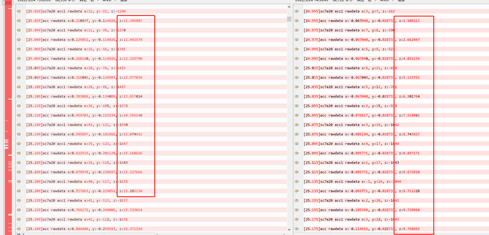

Accel Sensor 分析
Accel Sensor 驱动分析
参考
sensor_all_in_one.pdf
[CS6853-BD9D-PGD-V1.7EN_MT6853_SCP_Development_Guide.pdf](CS6853-BD9D-PGD-V1.7EN_MT6853_SCP_Development_Guide.pdf refer/CS6853-BD9D-PGD-V1.7EN_MT6853_SCP_Development_Guide.pdf)
代码分析
dts：
accel sensor:
&cust_accel_sc7a20 {
i2c_num = <1>;
i2c_addr = <0x18 0 0 0>;
direction = <7>;
power_id = <0xffff>;
power_vol = <0>;
firlen = <0>;
is_batch_supported = <0>;
};
&i2c1 {
gsensor_sc7a20@18 {
compatible = "mediatek,gsensor_sc7a20";
reg = <0x18>;
status = "okay";
};
}
debug调试
acc sensorhub调通后，scp打印如下：
----- timezone:Asia/Shanghai
8 overlay remap fail
[0.017]contexthub_fw_start tid: 268
[0.017]accGyro: app start
[0.017]sc7a20ResetRead
[0.017]alsps: app start
[0.017]initSensors: not ready!
[0.017]LIFT EVT_APP_START
[0.017]TILT EVT_APP_START
[0.017]STEP_RECOGNITION EVT_APP_START
[0.017]alsPs: init done
[0.017]read before sc7a20ResetWrite
[0.028]sc7a20DeviceId
[0.028]sc7a20 acc reso: 0, sensitivity: 1024
[0.028]sc7a20RegisterCore deviceId 0x11
[0.028]accGyro: init done
[0.518]initSensors: alloc blocks number:219
[0.520]get dram phy addr=0x8d000000,size=1048520, maxEventNumber:23830
[0.520]get dram phy rp=0,wp=0
[2.029]frequency request: 65535 MHz => 250 MHz
[2.829]sync time scp:2829537083, ap:4316042615, offset:1486968532
[8.765]hostintf: 8765761097, chreType:1, rate:0, latency:0, cmd:3!
[8.765]sensorCfgAcc:
[8.765]bias: 0.000000, 0.000000, 0.000000
[8.765]cali: 0, 0, 0
[8.765][MPEKlib]: MPE_CAL_A_VER_18082801
[8.765]sc7a20AccCfgCali: cfgData[0]:0, cfgData[1]:0, cfgData[2]:0
[8.765]acc: cfg done
初始化流程
首先看初始化流程：
int sc7a20Init(void)
{
if (mTask.deviceId != SC7A20_WHO_AM_I_WIA_ID) { 匹配ID
osLog(LOG_ERROR, "sc7a20: auto detect error wai 0x%x\n", mTask.deviceId);
ret = -1;
goto err_out;
}
osLog(LOG_INFO, "sc7a20: auto detect success wai 0x%x\n", mTask.deviceId);
accSensorRegister();
配置数据上传类型：
ACC_GYRO_FIFO_UNINTERRUPTIBLE FIFO型
ACC_GYRO_FIFO_INTERRUPTIBLE 中断FIFO
GYRO_ONLY_FIFO_INTERRUPTIBLE 只有陀螺仪FIFO中断
registerAccGyroInterruptMode(ACC_GYRO_FIFO_UNINTERRUPTIBLE);
注册FSM函数
* registerAccGyroDriverFsm(sc7a20Fsm, ARRAY_SIZE(sc7a20Fsm));
* osEnqueuePrivateEvt(EVT_APP_START, NULL, NULL, mTask.id);
* sensorFsmRunState(&dataInfo, &mTask.fsm, (const void *)CHIP_RESET, &i2cCallback, &spiCallback);
/* init state */
* sensorFsmCmd(STATE_RESET_R, STATE_RESET_W, sc7a20ResetRead),
* sensorFsmCmd(STATE_RESET_W, STATE_DEVID, sc7a20ResetWrite),
* sensorFsmCmd(STATE_DEVID, STATE_CALC_RESO, sc7a20DeviceId),
* sensorFsmCmd(STATE_CALC_RESO, STATE_CORE, sc7a20CalcReso),
* sensorFsmCmd(STATE_CORE, STATE_INIT_DONE, sc7a20RegisterCore),
* handleSensorEvent(const void *state) //接下来跑STATE_INIT_DONE
* case CHIP_INIT_DONE: {
* processPendingEvt();
* mSensorOps[handle].sensorCalibrate((void *)handle); //校准流程
* sensorCaliAcc(void *cookie) //校准acc
* sc7a20AccCali() //sc7a20.c
* accFactoryCalibrateInit(&mTask.accFactoryCal);
* sensorCaliGyro(void *cookie) //不支持校准gyro
* mSensorOps[handle].sensorCfgData(mTask.mSensorPerUnit[handle].pendCaliCfg, //cfgdata流程
* sensorCfgAcc()
* sc7a20AccCfgCali() //sc7a20.c
* mTask.staticCali[AXIS_X] = (float)caliCfgPacket.caliCfgData[0] / 1000; //赋值一下cali数据，没实际操作
* sensorCfgGyro() //不支持Cfggyro
* setGyroHwCaliCfg(&values[3]);
* sensorFsmRunState(&dataInfo, &mTask.fsm, (const void *)CHIP_GYRO_CFG, &i2cCallback, &spiCallback) //没定义CHIP_GYRO_CFG，也就是说没有陀螺仪校准
* mSensorOps[handle].sensorSelfTest((void *)handle); //自测
* sensorSelfTestAcc(void *data)
* sensorFsmRunState(&dataInfo, &mTask.fsm, (const void *)CHIP_ACC_SELFTEST, &i2cCallback, &spiCallback) //没定义CHIP_ACC_SELFTEST,不做
注册timer callback函数，无
* registerAccGyroTimerCbk(sc7a20TimerCbkF);
}
OVERLAY_DECLARE(sc7a20, OVERLAY_WORK_00, sc7a20Init);
数据上报流程
问题点分析
1.acc上报数据很卡顿
根据设置频率打印如下,使用AKM_sENSORmONITOR看，延时周期为62ms，频率计算为16HZ，太慢了，rate换算应该是除以1000：
[10538.230]hostintf: 10538230206894, chreType:1, rate:15359, latency:100000000, cmd:2! //设置15HZ
[10538.230]sensorFlushAcc
实际频率：
[11144.090]sc7a20 acc1 rawdata x:-62, y:30, z:-1130
[11144.153]sc7a20 acc1 rawdata x:-57, y:34, z:-1130 // 1/153-90 = 15.87 HZ也正常啊
[11144.215]sc7a20 acc1 rawdata x:-53, y:36, z:-1135
[11144.277]sc7a20 acc1 rawdata x:-49, y:35, z:-1134
[11144.340]sc7a20 acc1 rawdata x:-50, y:26, z:-1135
[11144.403]sc7a20 acc1 rawdata x:-51, y:25, z:-1138
进一次方向传感器后，正常了：
hostintf: 283048948674, chreType:1, rate:51200, latency:0, cmd:2!
但是采用kernel驱动方式，延时周期为65ms~66ms，频率是15HZ，不卡顿，难道是频率不匹配导致？继续看看framwork如何定义频率，下面可以看到framework层定义了4中频率，分别是fastest、50HZ/15HZ/5HZ四种：
frameworks/native/libs/sensor/SensorEventQueue.cpp传感器采样频率,是在android注册sensor的时候，会有一个delay的时间，这个时间就是采样的频率。上层注册 API registerListener（listener, sensor,rate）rate 即为时间:
status_t SensorEventQueue::enableSensor(Sensor const* sensor) const {
return enableSensor(sensor, SENSOR_DELAY_NORMAL);
}
class SensorEventQueue : public ASensorEventQueue, public RefBase
{
public:
enum { MAX_RECEIVE_BUFFER_EVENT_COUNT = 256 };
/**
* Typical sensor delay (sample period) in microseconds.
*/
// Fastest sampling, system will bound it to minDelay
static constexpr int32_t SENSOR_DELAY_FASTEST = 0;
// Typical sample period for game, 50Hz;
static constexpr int32_t SENSOR_DELAY_GAME = 20000;
// Typical sample period for UI, 15Hz
static constexpr int32_t SENSOR_DELAY_UI = 66667;
// Default sensor sample period
static constexpr int32_t SENSOR_DELAY_NORMAL = 200000;
...省略...
}
sensorhub中定义如下：
static const uint32_t accSupportedRates[] = {
SENSOR_HZ(5.0f),
SENSOR_HZ(10.0f),
SENSOR_HZ(16.0f),
SENSOR_HZ(50.0f),
SENSOR_HZ(100.0f),
SENSOR_HZ(200.0f),
SENSOR_HZ(400.0f),
0
};
static const uint64_t rateTimerValsAcc[] = {
//should match "supported rates in length" and be the timer length for that rate in nanosecs
1000000000ULL / 5,
1000000000ULL / 10,
1000000000ULL / 16,
1000000000ULL / 50,
1000000000ULL / 100,
1000000000ULL / 200,
1000000000ULL / 400,
};
也就是说framework中支持的频率与sensorhub中的不匹配，上层设置15HZ下来，本来周期是66ms。而底层上报的是16hz，62ms，这样一来，两边时序不对等，poll机制可能出现超时，也就是说上层实际rate更低，那解决办法就是让两边频率设置对等，并且加上频率-时间检测，可参考
0003_抬起亮屏功能开发.md。
2.acc软重启后平放数据偏差较大有问题
正常数据如下：
软重启后异常数据：
正常和不正常启动log对比，发现开机后z轴都是慢慢加上去的：

最后解决方案：
控制寄存器 4(23h) BDU配置从输出数据寄存器不更新直到 MSB 和 LSB 被读取改为连续更新。
--- a/vendor/mediatek/proprietary/tinysys/freertos/source/middleware/contexthub/MEMS_Driver/accGyro/sc7a20.c
+++ b/vendor/mediatek/proprietary/tinysys/freertos/source/middleware/contexthub/MEMS_Driver/accGyro/sc7a20.c
@@ -269,10 +269,8 @@ static int sc7a20ResetWrite(I2cCallbackF i2cCallBack, SpiCbkF spiCallBack, void
// end:SDO pull-up resistor close off
//[BUGFIX]-Modify-BEGIN by (wugangnan@paxsz.com), 2022/3/25, for Z axis data is inaccurate when soft reboot ,so sw reset
- // mTask.txBuf[0] = SC7A20_CTRL_REG4;
- // mTask.txBuf[1] = 0x88; //BDU set 1; BLE set 0; HR set 1; scale = 2g
- mTask.txBuf[0] = SC7A20_CTRL_REG1;
- mTask.txBuf[1] = 0x00; //close
+ mTask.txBuf[0] = SC7A20_CTRL_REG4;
+ mTask.txBuf[1] = 0x08; //BDU set 1; BLE set 0; HR set 1; scale = 2g
原因未知，可以sensorhub就必须使用连续更新数据吧，且功耗并未增加。